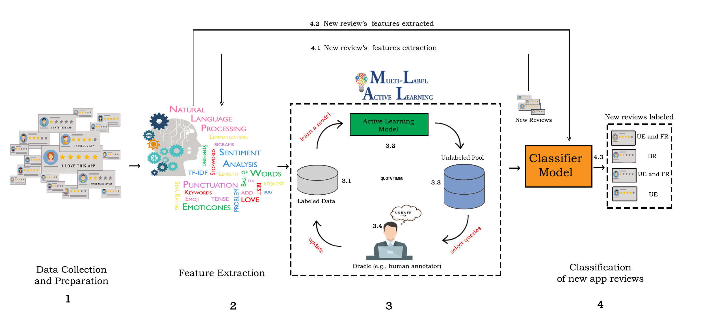

A Multi-label Active Learning Approach for Mobile App User Review Classi cation
Paper accepted in The 12th International Conference on Knowledge Science, Engineering and Management (KSEM 2019)
Abstract
User reviews of mobile applications convey useful feedback from users, e.g. feature requests, bug descriptions, etc. The increasing number of reviews that users submit daily makes it difficult for developers to manually analyze and classify them into proper review categories. Moreover, several review messages may contain more than one information. In this paper, we propose to use multi-label active learning as a convenient solution to the problem of mobile app user reviews classification. An unlabeled and structured dataset was built from the initially unstructured large set of review messages. Moreover, in order to reduce the effort needed to assign labels to each instance in the large constructed dataset, we opted for an Active Learning approach. Experimental results have shown that, by actively querying an oracle for labels during training a binary relevance-based classifier (with logistic regression as a base classifier), we obtained a classifier that outperformed well-known classifiers in terms of performance without the need to label the whole dataset.
Abstract
Video Tutorial of User Review Classification
List of adopted projects that were randomly selected from Github:
| Applications | Source |
|---|---|
| geocaching | https://github.com/cgeo/cgeo |
| anuto | https://github.com/reloZid/android-anuto |
| adam.aslfms | https://github.com/tgwizard/sls.git |
| amaze.filemanager | https://github.com/arpitkh96/AmazeFileManager |
| android.reddit | https://github.com/talklittle/reddit-is-fun.git |
| android.keepass | https://github.com/bpellin/keepassdroid.git |
| faircode.netguard | https://github.com/M66B/NetGuard |
| fastaccess.github | https://github.com/k0shk0sh/FastHub |
| ccrama.redditslide | https://github.com/ccrama/Slide |
| mozilla.mozstumbler | https://github.com/mozilla/MozStumbler.git |
| org.videolan.vlc | https://code.videolan.org/videolan/vlc-android.git |